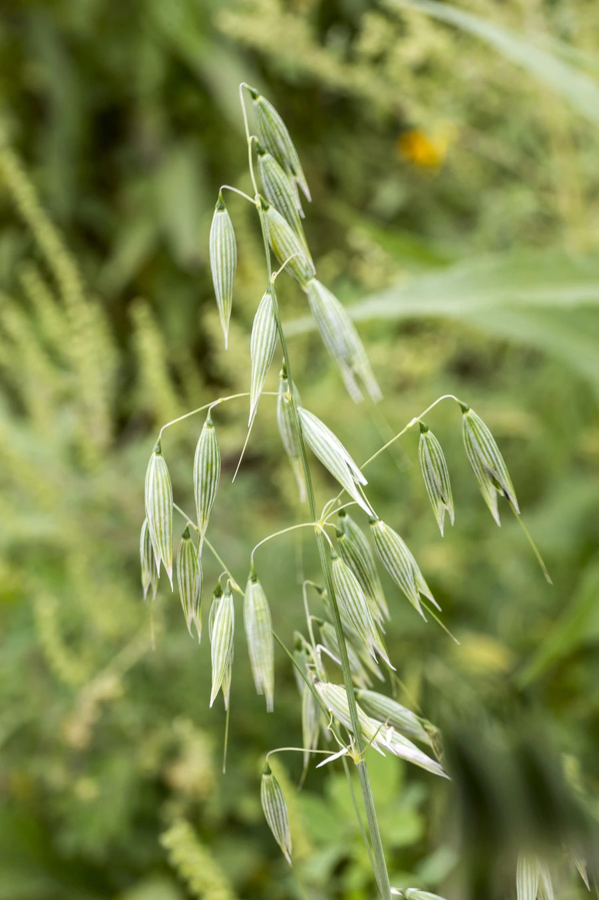

农作物与经济植物 · 植物界
燕麦 Avena sativa

燕麦的籽粒富含膳食纤维和蛋白质，可加工成燕麦片，是备受推崇的健康谷物，也常作为优质饲草种植。
- 分类
- 门被子植物门纲单子叶植物纲目禾本目科禾本科属燕麦属
- 栖息环境
- 温带冷凉地区的平原与高原，喜凉爽湿润，耐寒耐瘠薄
- 地理分布
- 原产欧洲与西亚，现主产于俄罗斯、加拿大、中国、美国等地
- 保护级别
- 暂无评估（栽培作物）
物种志
燕麦是一年生草本，株高 0.6–1.5 m，须根系，茎秆直立。叶片扁平，较宽。圆锥花序顶生，分枝下垂，小穗含 2–3 朵小花，多自花授粉，成熟时小穗下垂如铃铛，种子外被稃壳。按栽培方式分为皮燕麦和裸燕麦，裸燕麦即莜麦，籽粒可直接磨粉食用。
燕麦原产欧洲与西亚一带，栽培历史约 2000–3000 年，由野燕麦驯化而来，是温带冷凉地区的重要谷物。它喜凉爽湿润气候，耐寒、耐瘠薄，对土壤要求不严，但忌高温干旱。燕麦籽粒富含膳食纤维，尤其是 β-葡聚糖，可加工成燕麦片、燕麦粉，是公认的健康食品；茎叶柔嫩多汁，是优良的饲草。中国内蒙古、河北、山西等地是裸燕麦（莜麦）的主产区。
形态与习性
- 株高0.6–1.5 m
- 花序圆锥花序，小穗下垂如铃铛
- 类型皮燕麦与裸燕麦（莜麦）
- 营养富含膳食纤维与 β-葡聚糖
- 食用燕麦片、燕麦粉
- 饲用茎叶可作优良饲草
趣味知识
- 燕麦的小穗成熟后下垂，像一串串小铃铛。
- 燕麦富含可溶性膳食纤维 β-葡聚糖，是健康食品的原料。
- 裸燕麦又叫莜麦，籽粒可直接磨粉做成莜面。